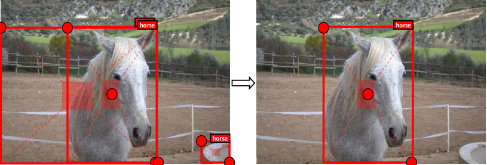
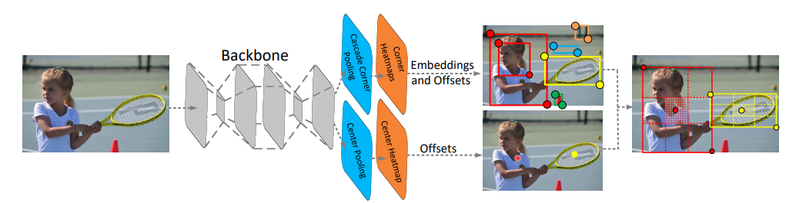
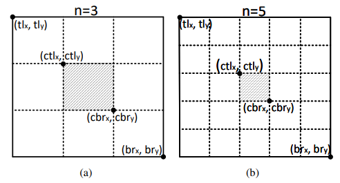
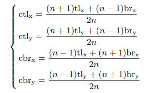
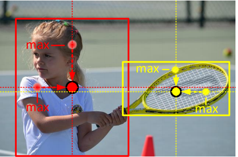
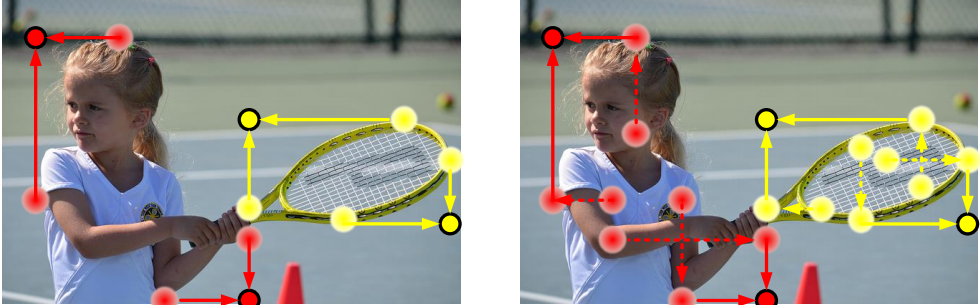
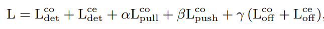
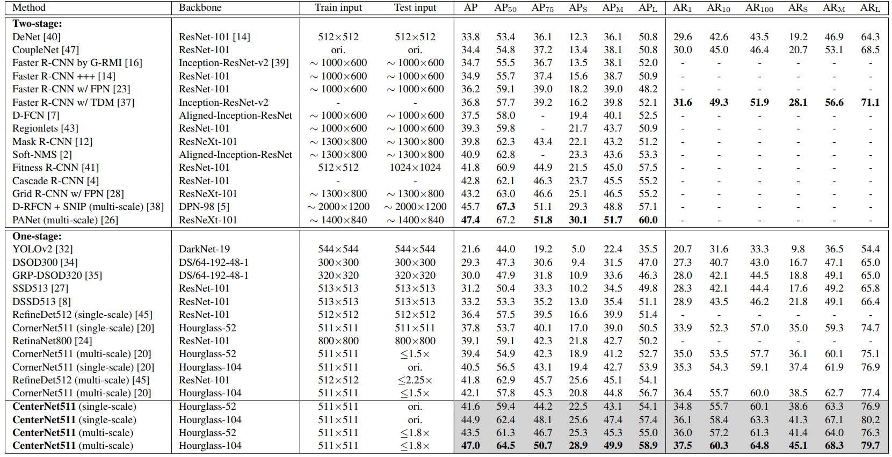

CenterNet: Keypoint Triplets for Object Detection
作者团队：中科院、牛津大学、华为诺亚方舟实验室
原文链接：https://arxiv.org/abs/1904.08189
repo：https://github.com/Duankaiwen/CenterNet
摘要
本文提出的网络模型基于CornerNet，在top-left和bottom-right点上又引入了一个中心点，可以有效地抑制误检，同时引入了cascade pooling与center pooling两种池化方式。CoCo上mAP达到了恐怖的47.0%，远超于其他的one-stage网络。
介绍
基于anchor-based的检测方法，通常需要大量的anchor boxes来确保较高的IoU值。其次，anchor boxes的使用引入了许多超参数和设计选择，包括多少个box，大小和宽高比。为了克服这些缺点，Hei Law提出了CornerNet。CornerNet，一种新的one-stage目标检测方法，不再使用anchor boxes，而将一个目标物体检测为一对关键点：边界框的左上角和右下角。
但是由于其缺乏对目标全局信息的参考，CornerNet有很大的局限性，而且CornerNet对边缘信息非常敏感。为了解决这个问题，本文改进了CornerNet网络，提出CenterNet模型。CenterNet原理如下：
主要基于以下推论：如果目标框是准确的，那么在其中心区域能够检测到目标中心点的概率就会很高，反之亦然。如下图，CenterNet首先利用左上与右下点生成初始目标框，对于每个目标框定义一个中心区域（红色阴影矩形框）。然后判断每个目标框的中心区域是否含有中心点，若有则保留该目标框，若无则删除该目标框。

模型设计
总览
下图是网络的结构图

主干网络采用了和CornerNet相同的沙漏网络，网络分别使用cascade corner pooling和center pooling生成两个corner heatmaps和一个center keypoint heatmap，然后再通过以下步骤产生bounding boxes：
- 根据得分选取前面k个关键点；
- 根据偏移量remap至输入图像中；
- 给每个bounding box定义一个中心区域，检查中心区域是否包含中心点，并且保证类别与bounding box的一致；
- 如果中心区域检测到中心点，则保留该边界框，并且使用左上角，右下角及中心点的分数的平均值更新边界框的分数，否则移除该边界框。
中心区域的大小影响检测结果，如果区域过小，导致小目标检测效果不好，过大，精度降低，为解决这个问题，提出了尺度可调节的中心区域法，如下图所示：


Center pooling
目标物的几何中心可能丢失语义信息，比如（人的头部包含很强的语义信息，但几何中心大部分在人躯体的中间）。为解决这个问题，提出了center pooling。center pooling提取中心点水平方向和垂直方向的最大值并相加，以此给中心点提供所处位置以外的信息。

Cascade corner pooling
角点经常超出目标物的边界，缺少局部视觉外形特征，这为角点的检测带来了困难。下图中左图为传统做法，称为 corner pooling。它提取物体边界最大值并相加，该方法只能提供关联物体边缘语义信息，对于更加丰富的物体内部语义信息则很难提取到。右图为cascade corner pooling 原理，它首先提取物体边界最大值，然后在边界最大值处继续向内部(图中沿虚线方向)提取提最大值，并与边界最大值相加，以此给角点特征提供更加丰富的关联物体语义信息。

损失函数

与CornerNet类似
结果
CoCo上47.0%，但是速度略慢，因为沙漏⏳网络原因。

参考
https://zhuanlan.zhihu.com/p/62789701
https://www.cnblogs.com/fourmi/p/10743820.html